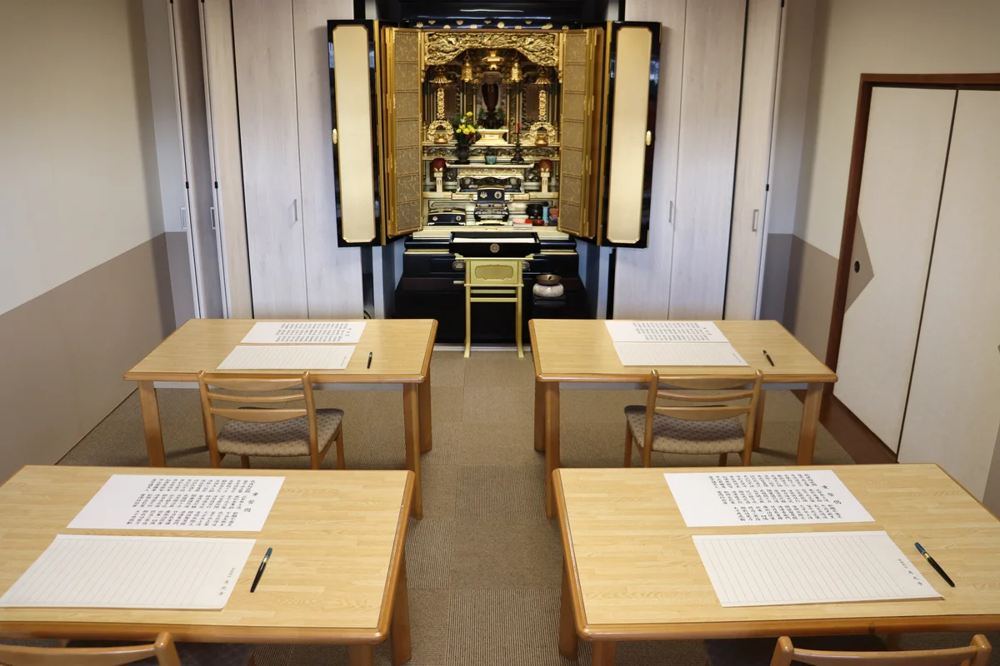
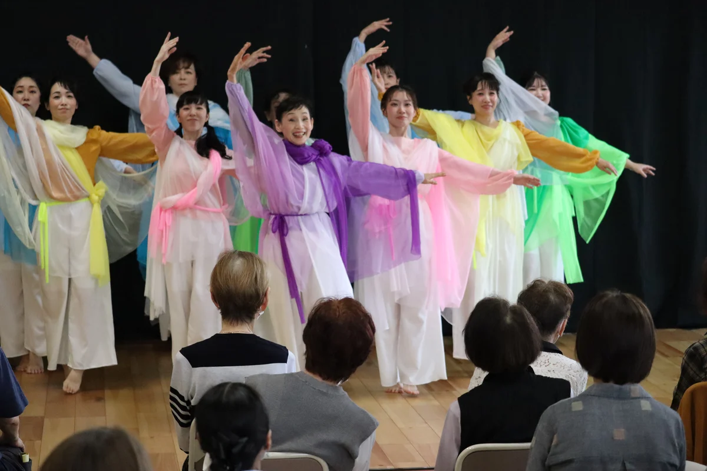
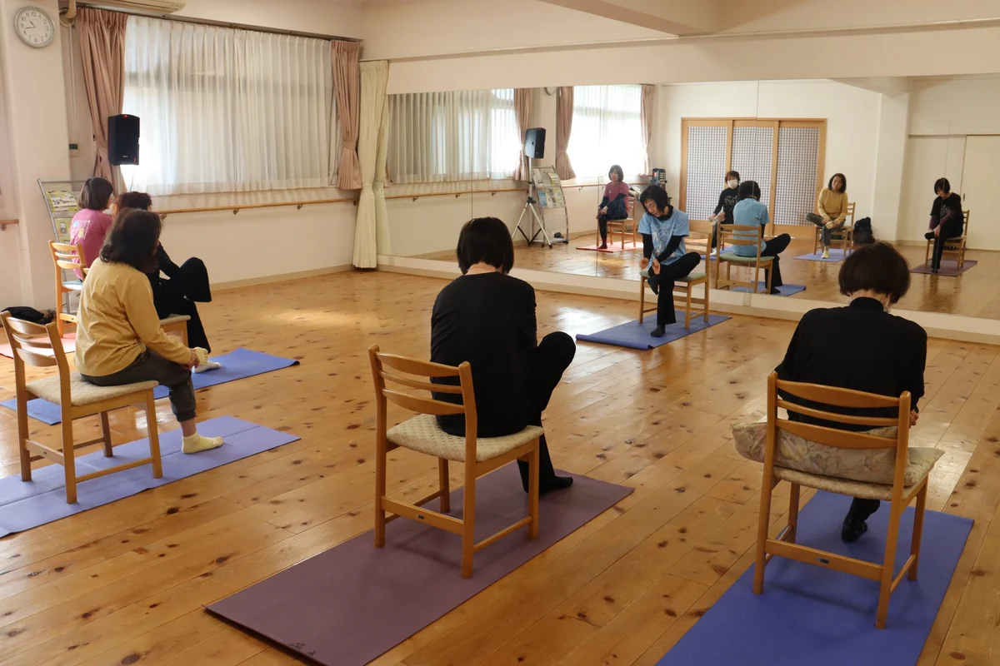
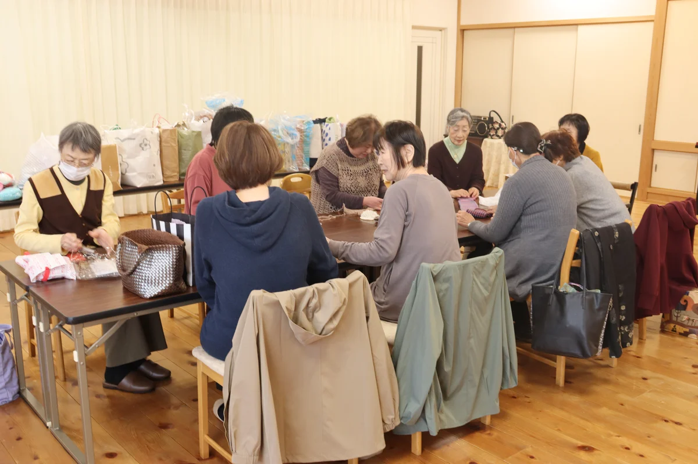
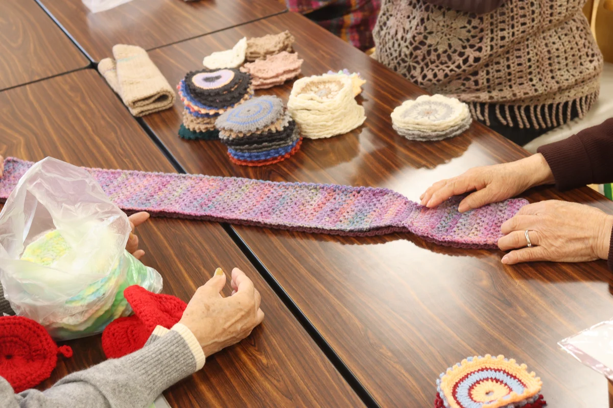
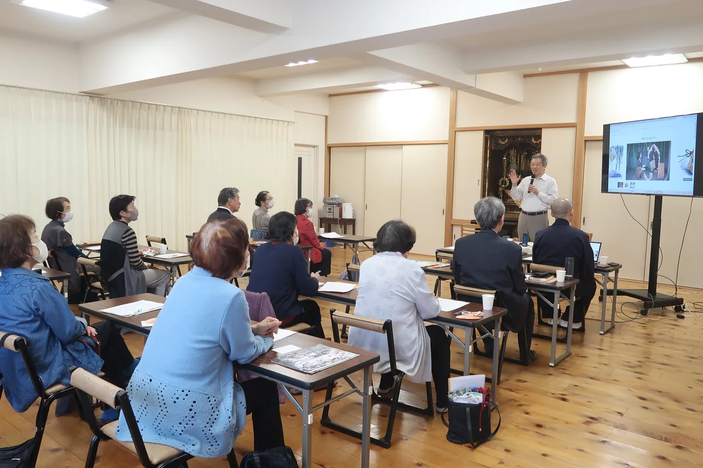

恵光寺のいま
恵光寺のいま
自分のこころに向き合う。相手の言葉の背景を聴く。まちの歴史を学ぶ。手を動かし、ともによろこぶ。
どなたでも、お気軽に
恵光寺では、法要のほかにも、さまざまな集まりをひらいています。はじめての方も、どうぞお気軽にお越しください。
どの集まりも、「いのち、ひびきあうお寺」をめざす恵光寺の大切な活動です。
いのちひびきあうお寺とは「お写経」

静かに筆をとり、自分の心の揺れを感じながら、そのまま書写します。
- 日時
- 毎月はじめの水曜日 10:00〜12:00
- 場所
- セミナールーム・ホール（全席イス席）
- 費用
- 1,000円（初回は半紙とお手本あわせて2,000円）
- 持ち物
- 筆ペン（お寺でも1本500円で購入できます）
- 申込み
- 不要
「人生会議」
2027年から「聴き方のお稽古」が始まります。毎回テーマにそって「聴き手」と「話し手」に分かれ、おしゃべりをします。相手の言葉の向こうにある「こころの揺れ」に耳を澄ませるトレーニングの時間です。
- 日時
- 2か月に1回・水曜日 18:30〜20:00
- 場所
- 恵光寺ホール
- 流れ
- みんなで読経 → テーマ発表・グループ分け → 対話
- 対象
- 年齢・性別の制限はありません
- 費用
- ご門徒（そのご家族）以外の方は500円
- 申込み
- 必要（事前申込制）
2027年の日程（すべて水曜日）
「生き方／終活／お葬式」についての無料相談会（事前申込不要・終了後に個別相談）
- 2月6日（土）
- 11:00〜12:00 テーマ「仏壇じまい、墓じまいの方法」
- 4月3日（土）
- 11:00〜12:00 テーマ「葬儀の準備、終活についての手順」
- 6月5日（土）
- 11:00〜12:00 テーマ「仏壇じまい、墓じまいの方法」
- 9月25日（土）
- 13:00〜14:00 テーマ「自分の心と上手につきあうために」
「話すのが苦手」という方も大歓迎です。来たいときに来て、ご都合の悪いときはお休みいただいて大丈夫です。※録音はお断りしています。
「読経の会」
2027年から始まる新しい会。声とからだをとおして、自分の「軸」をしなやかにします。
- 日時
- 日時は決まり次第お知らせします
- 場所
- 恵光寺ホール
- 費用
- ご門徒（そのご家族）以外の方は500円
- 申込み
- 不要
「ナチュラルダンスMOVE」


体の軸にのって動く感覚をやしなう場です。女性を中心に、20代から80代まで幅広い世代の方が参加しています。年に一度、10月第4土曜日の15時から発表会を開いています。
- 日時
- ダンスのクラス：毎週火曜日 10:00〜11:30
イスに座ったままのクラス：毎週木曜日 10:00〜11:30 - 場所
- 恵光寺ホール
- 費用
- お問い合わせください
- 申込み
- 必要（事前申込制）
「編み物サークル ぬくい手（あったかい手）」


女性を中心に、楽しく「手遊びマフ」を編んでいます。マフは手にはめるとあたたかく心が落ち着くため、認知症の方や施設へ無料でお届けしています。編み物がはじめての方も、久しぶりの方も大丈夫。見学だけでも大歓迎です。
- 日時
- 毎月1回・木曜日 13:00〜15:00
- 場所
- 恵光寺ホール
- 費用
- 500円
- 持ち物
- 手ぶらでOK
- 申込み
- 不要。当日そのままお越しください
2027年の日程（すべて木曜日）
毛糸、おすそわけしてくれませんか？
材料の毛糸が少なくなってきました。押し入れで眠っている余り毛糸や、使いかけの毛糸がありましたら、ぜひお寺へ。ウールが混ざった毛糸だと特に嬉しいです（ポリエステルでも構いません）。色や太さはバラバラで大丈夫です。
お寺の行事やお参りの際にお持ちいただくか、恵光寺「ぬくい手」宛てに郵送でお送りください（送料はご負担をお願いします）。マフをご希望の方には差し上げています。お電話でどうぞ。
「萱振寺内町歴史勉強会」

歴史学者の小谷利明先生とたどる、萱振と恵光寺の歴史を学ぶ時間です。2027年は「顕如上人・准如上人の時代」「近世の恵光寺」。
- 日時
- 年4回 14:00〜15:30
- 場所
- 恵光寺ホール
- 費用
- 無料
- 申込み
- 不要
2027年の日程